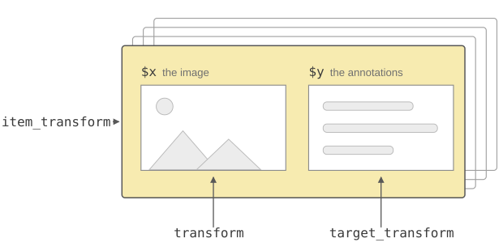
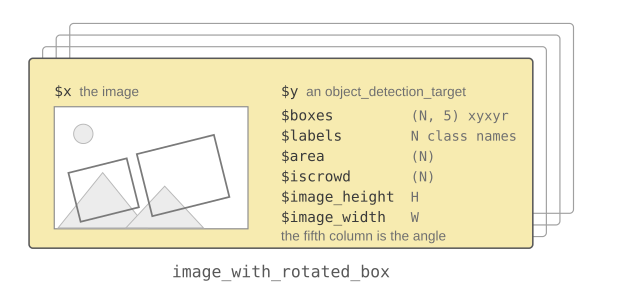
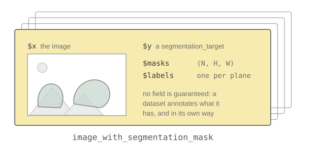
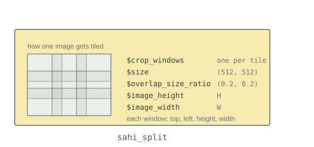

What a torchvision dataset hands back is a plain R list with an S3 class glued onto it, and that class is what the rest of the package dispatches on. It decides which transform will accept the object, what the object holds once that transform has run, and which drawing helper can render it. This article goes through those classes and shows what is inside each of them.
The code is not evaluated when the website is built, since most of it needs a dataset on disk.
An item is a pair that has to stay consistent. Rotate the image and the boxes have to turn with it; crop it and the masks have to be cropped the same way. The class on the item is what records which kind of annotation it carries, so that one function name can do the right thing for each of them and refuse the ones it cannot handle, rather than return a mismatched pair.
The target transforms used to read the fields of y to
work out what they had been handed. Dispatching on a class instead makes
the contract explicit: a target that has lost its class fails at the
call, rather than producing a wrong result two steps later. It is also
what lets the drawing helpers take an item whole, since
draw_bounding_boxes(item) knows where the image, the boxes
and the labels are only because the class says so.
Indexing a dataset returns an item: a list with
x, the image, and y, everything the dataset
knows about that image. y is called the
target.

$x and its annotations in $y.A dataset takes up to three transform arguments, and they reach
different depths of that structure. transform is handed
x alone, target_transform is handed
y alone, and item_transform is handed the item
as a whole, once the other two have run. Classification datasets only
offer the first two. Detection and segmentation datasets offer all
three, because an image cannot be rotated or cropped without moving its
boxes and masks with it.
ds <- coco_detection_dataset(
train = FALSE,
download = TRUE,
transform = transform_to_tensor,
item_transform = function(item) item_transform_resize(item, c(480, 640))
)transform_to_tensor is doing more work there than it
looks. A dataset returns x in whatever form it was read in,
which is the (H, W, 3) channel-last array of
base_loader() for most of them and a magick image for
cityscapes_dataset(). The item transforms and the drawing
helpers all want the (C, H, W) tensor that torch models
take, so a detection or segmentation dataset is nearly always built with
transform = transform_to_tensor.
The dataset itself is classed by task, with
object_detection_dataset or
segmentation_dataset inserted ahead of dataset
so that task methods win over the generic ones while the dataset keeps
its own name first. That class is what lets you hand a whole dataset to
an item transform:
ds <- item_transform_random_horizontal_flip(ds, p = 0.5)which composes the flip into the dataset’s
item_transform rather than applying it once.
The simplest items carry no class at all.
mnist_dataset(), cifar10_dataset(),
eurosat_dataset() and the other classification datasets
return a bare list whose y is the class index:
mnist <- mnist_dataset(root = tempdir(), download = TRUE, transform = transform_to_tensor)
str(mnist[1])
#> List of 2
#> $ x:Float [1:1, 1:28, 1:28]
#> $ y: int 6flickr8k_caption_dataset() and
flickr30k_caption_dataset() have the same shape, with a
character vector of captions in y. Nothing dispatches on
these items: an image transform goes in through transform,
and there is no geometry in the target to keep in sync with it.
coco_detection_dataset(),
pascal_detection_dataset() and the
rf100_*_collection()s give their items the class
image_with_bounding_box and their target the class
object_detection_target.
image_with_bounding_box item and
the fields of its object_detection_target.| field | contents |
|---|---|
$boxes |
(N, 4) tensor, one row per object, as
(x_min, y_min, x_max, y_max) in pixels |
$labels |
the class name of each box |
$area |
(N) float tensor, the area of each annotation |
$iscrowd |
(N) boolean tensor, TRUE where the
annotation covers a group of objects rather than one |
$image_height, $image_width
|
the size x had when the boxes were read |
Only $boxes is guaranteed, since that is the field the
class is validated on. The rest is whatever the annotations happened to
carry: the table above is a COCO target, while an RF100 one holds
$boxes, $labels and an $image_id
and nothing else.
draw_bounding_boxes() has a method for the item, so it
finds $x, $y$boxes and $y$labels
on its own:
boxed <- draw_bounding_boxes(ds[1])
tensor_image_browse(boxed)Four numbers per box cannot describe a box that has been turned, so
item_transform_rotate() and
item_transform_affine() return an
image_with_rotated_box instead of the item they were
given:
class(item_transform_rotate(ds[1], angle = 15))
#> [1] "image_with_rotated_box" "list"
image_with_rotated_box item:
same target fields, but $boxes has a fifth column.The target keeps its object_detection_target class and
its fields, but $boxes gains a fifth column holding the
accumulated angle in degrees, the xyxyr format that
box_xyxy_to_xyxyr() and
target_transform_rotate() produce.
draw_bounding_boxes() has a second method for this class
which draws each box as a polygon through magick rather than as an
upright rectangle.
Every item transform has a method for rotated-box items, except
item_transform_perspective().
coco_segmentation_dataset(),
pascal_segmentation_dataset(),
cityscapes_dataset(),
oxfordiiitpet_segmentation_dataset() and
rf100_peixos_segmentation_dataset() return
image_with_segmentation_mask items whose target is a
segmentation_target.

image_with_segmentation_mask
item and its segmentation_target.No field is required here. Segmentation annotations differ far more
between datasets than detection ones do, so each dataset passes on what
it reads: polygons in $segmentation for COCO,
$polygon, $color, $semantic and
$instance for Cityscapes depending on the requested
target_type, one-hot $masks for Oxford-IIIT
Pet and Pascal VOC. $labels is not uniform either: the
detection datasets name their classes, while
pascal_segmentation_dataset() numbers the planes of
$masks that are not empty.
What draw_segmentation_masks() and the segmentation
models want is $masks, an (N, H, W) tensor
with one plane per annotated class. Two target transforms build it from
raw annotations:
| transform | reads |
|---|---|
target_transform_coco_masks() |
$segmentation, the COCO polygons |
target_transform_trimap_masks() |
$trimap, the three-value Oxford-IIIT Pet mask |
seg_ds <- coco_segmentation_dataset(
train = FALSE,
download = TRUE,
transform = transform_to_tensor,
target_transform = target_transform_coco_masks
)
masked <- draw_segmentation_masks(seg_ds[1])coco_segmentation_dataset() only promotes its items to
image_with_segmentation_mask once $masks is
there, so without that target transform they stay
image_with_bounding_box. cityscapes_dataset()
has no target transform of its own, and its targets have to be turned
into $masks by hand before they can be drawn.
sahi_split
SAHI, Slicing Aided Hyper Inference, cuts a large image into
overlapping tiles, runs the model on each and puts the results back
together. The tiling itself is an object:
prepare_sahi_split() measures an image and returns a
sahi_split.

sahi_split, drawn as one card
rather than a deck, because it is computed once and reused across
images.
split <- prepare_sahi_split(c(1000, 1200), size = c(512, 512))
length(split$crop_windows)
#> [1] 9It holds $crop_windows, one
top/left/height/width
window per tile, and the $size,
$overlap_size_ratio, $image_height and
$image_width it was computed from. Keeping it as its own
object is what lets the same tiling be applied to an image and to its
target, so the two stay aligned:
tiled <- ds[1]
split <- prepare_sahi_split(tiled$x, size = c(256, 256))
crops <- transform_sahi_crop(tiled$x, split)
targets <- target_transform_sahi_crop(tiled$y, split)transform_sahi_crop() returns the tiles stacked as an
(N, C, H, W) batch.
target_transform_sahi_crop() returns one target per tile,
each box clipped to the tile and shifted into its coordinates, and
$image_height and $image_width set to the size
of the tile rather than of the original image. A box is kept only if
what survives the clip is at least min_area_ratio of its
original area, a tenth by default, so a box grazing the edge of a tile
is dropped from that tile rather than kept as a sliver.
Unlike the item transforms, this pair turns one item into many, so
there is no item_transform_sahi_crop() doing both halves at
once.
| family | dispatches on | acts on |
|---|---|---|
transform_*() |
torch_tensor |
the image alone |
prepare_sahi_split() |
numeric, torch_tensor,
magick-image, dataset
|
measures an image, returns a sahi_split
|
target_transform_resize(),
target_transform_rotate(),
target_transform_affine(),
target_transform_sahi_crop()
|
object_detection_target |
the target alone |
target_transform_coco_masks(),
target_transform_trimap_masks()
|
segmentation_target |
the target alone |
item_transform_*() |
image_with_bounding_box,
image_with_rotated_box,
image_with_segmentation_mask, dataset
|
image and target together |
draw_bounding_boxes() |
torch_tensor, image_with_bounding_box,
image_with_rotated_box
|
draws boxes on the image |
draw_segmentation_masks() |
torch_tensor,
image_with_segmentation_mask
|
overlays masks on the image |
The two groups of target transforms are disjoint, which is why they
are two rows and not one. The first group moves boxes and is written for
detection targets only; the second builds $masks out of the
annotations a segmentation dataset carries. Crossing them is an error
rather than a silent no-op, so target_transform_rotate() on
a segmentation_target, or
target_transform_coco_masks() on an
object_detection_target, stops with
not implemented for and the class it was handed.
The image transforms are written for torch_tensor. Five
of them also take a magick image, transform_crop(),
transform_hflip(), transform_resize(),
transform_sahi_crop() and
transform_to_tensor(), and
transform_to_tensor() alone takes an array, a
matrix or a list, which is how an image coming
off a loader gets into a tensor in the first place.
The item transforms are the most uniform family: each of them takes
all three item classes and a dataset, apart from
item_transform_perspective(), which has no rotated-box
method. Among the target transforms only
target_transform_rotate() takes a dataset as well. The
reference index lists each of these families in full.
draw_keypoints() is not generic: it takes an image
tensor and an (N, K, 2) keypoint tensor.
Calling any of these on something they have no method for stops with an error naming the class it was given, which is usually a sign that a target lost its class somewhere along a pipeline.
A bare list is not accepted as a target, so annotations that do not come out of a torchvision dataset need their classes set before any of this will look at them:
img <- torch_randint(0, 255, size = c(3, 120, 160))$to(dtype = torch_uint8())
y <- list(
boxes = torch_tensor(rbind(c(10, 20, 60, 90), c(70, 30, 150, 110)), dtype = torch_float()),
labels = c("cat", "dog"),
image_height = 120,
image_width = 160
)
class(y) <- c("object_detection_target", "list")
item <- list(x = img, y = y)
class(item) <- c("image_with_bounding_box", "list")
str(item)
#> List of 2
#> $ x:Byte [1:3, 1:120, 1:160]
#> $ y:List of 4
#> ..$ boxes :Float [1:2, 1:4]
#> ..$ labels : chr [1:2] "cat" "dog"
#> ..$ image_height: num 120
#> ..$ image_width : num 160
#> ..- attr(*, "class")= chr [1:2] "object_detection_target" "list"
#> - attr(*, "class")= chr [1:2] "image_with_bounding_box" "list"A segmentation target is built the same way, with
segmentation_target and
image_with_segmentation_mask.
Model outputs are plain lists and carry no class of their own. The
object detection models return $detections, one element per
image of the batch, each with $boxes, $labels
and $scores; the semantic segmentation models return
$out, the per-class logits. The Visualization utilities
article covers turning either of them into something the drawing helpers
can render.
If you have used the v2 transforms of the Python torchvision, these classes cover the same ground as TVTensors, but they are attached one level further out.
A TVTensor is a subclass of torch.Tensor.
Image, Video, BoundingBoxes,
Mask and KeyPoints are tensors that know what
they are, and a BoundingBoxes carries its
format and its canvas_size as attributes of
the tensor itself. A v2 transform walks an arbitrary nested sample, a
dict, a list or a tuple, dispatches on the type of each element it
finds, hands back the same structure, and passes anything it does not
recognise through untouched.
Here the class goes on the list instead. $x and
$y$boxes are ordinary torch_tensors, and what
carries the meaning is image_with_bounding_box on the item
and object_detection_target on y. Four
differences follow from that:
list(x, y) rather than any nesting
you like, and the three transform families say which half of it they act
on instead of one transform traversing the whole sample.$boxes:
four columns are xyxy, five are xyxyr. What canvas_size
holds lives in $image_height and $image_width
on the target.item_transform_rotate() hands back an
image_with_rotated_box. On the Python side the object stays
a BoundingBoxes and the distinction lives in its
format.Image will treat the first plain tensor it
finds as the image; here a list without its class is an error, not a
guess.Two of the five TVTensors have no counterpart here. There is no video
support at all, and keypoints are not a class:
draw_keypoints() takes an image tensor and a keypoint
tensor and nothing dispatches on either.